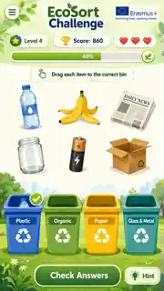
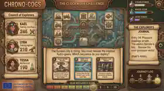
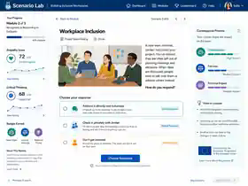
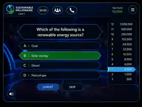
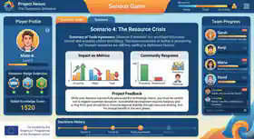
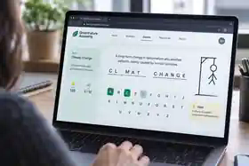
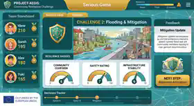
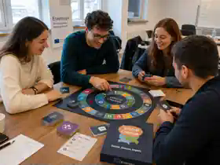
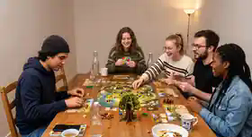

Konzeptbeispiel
EcoSort Challenge
Mobiles Lernspiel zur Abfalltrennung mit Levels, Punkten und direktem Feedback.
Diese Seite bündelt unsere eigenen Konzeptbeispiele, mögliche interaktive Lernformate und eine klare Übersicht darüber, wie digitale Outputs in europäischen Projekten eingesetzt werden können.
Der folgende Überblick zeigt, wie unsere Kompetenzen in europäischen Projekten eingesetzt und mit konkreten Projektanforderungen verbunden werden können.
Alle folgenden Arbeiten sind als Konzeptbeispiele gekennzeichnet. Sie zeigen mögliche Funktionen, visuelle Richtungen und Einsatzformen, werden jedoch nicht als abgeschlossene Kundenprojekte dargestellt.

Mobiles Lernspiel zur Abfalltrennung mit Levels, Punkten und direktem Feedback.

Narratives Serious Game mit Teamrollen, Ressourcenmanagement und verzweigten Entscheidungen.

Interaktive E-Learning-Szenarien für Inklusion, Reflexion und wirkungsorientierte Entscheidungen.
Mobile Microlearning-Anwendung für Cybersecurity-Awareness und sichere digitale Entscheidungen.

Quizbasiertes Serious Game zu Nachhaltigkeit, Wissenstransfer und spielerischem Lernen.

Kollaboratives Entscheidungsspiel mit Ressourcen, Teamfortschritt und projektbezogenem Feedback.

Browserbasierte Lernplattform mit spielerischen Übungen, Fortschritt und thematischen Modulen.

Simulation für gesellschaftliche Resilienz mit Teamwerten, Szenarien und messbaren Auswirkungen.

Workshop- und Kartenspiel für moderierte Diskussionen, Reflexion und Gruppenlernen.

Gemeinsam spielbares Lernformat mit Karten, Spielfeld, Ressourcen und sozialer Interaktion.
Je nach Thema und Zielgruppe können Inhalte als Quiz, Szenario, Microlearning, Simulation, Zuordnungsaufgabe oder Workshop-Tool umgesetzt werden. Gestaltung, Sprache und Funktionen werden projektspezifisch angepasst.
Wissensfragen mit unmittelbarem Feedback, Punkten, Fortschritt und optionalen Erklärungen.
Entscheidungsbasierte Lernpfade, in denen verschiedene Optionen zu sichtbaren Konsequenzen führen.
Kurze mobile Lerneinheiten mit klaren Aufgaben, visuellen Hinweisen und schnellem Abschluss.
Aufgaben, Hinweise und Etappen werden zu einer motivierenden, zielorientierten Lernreise verbunden.
Interaktive Klassifizierung von Begriffen, Bildern oder Situationen mit direkter Rückmeldung.
Digitale oder hybride Impulse für Gruppendiskussionen, Reflexion und gemeinsame Entscheidungen.
Thema, Zielgruppe, Sprache, visuelle Identität, technische Funktionen und Lieferformat werden projektspezifisch angepasst.
E-Mailinfo@narli-digital.de